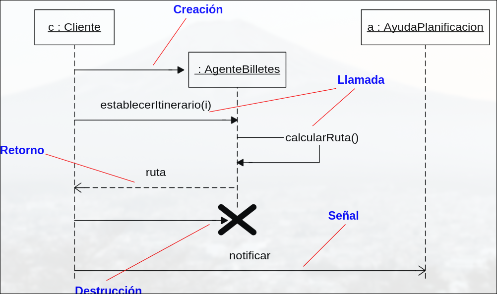
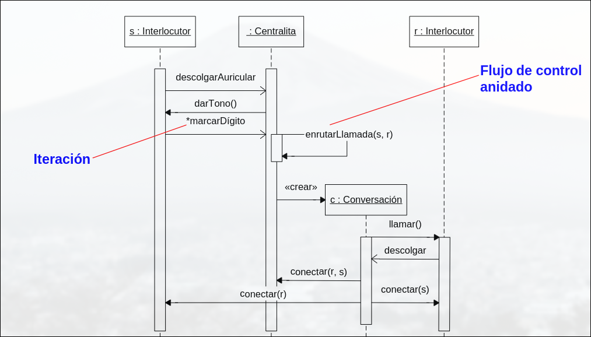
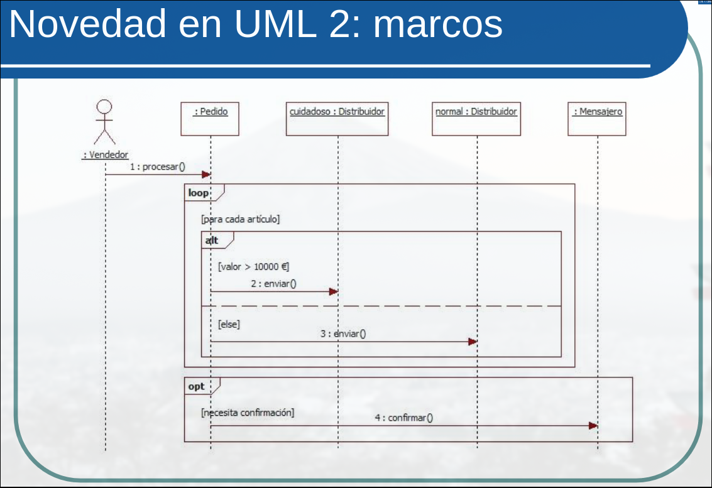

DESOFT · curso 2
4. Modelado de Comportamiento
(diagramas de interacción)
Una interacción es un comportamiento que incluye mensajes intercambiados por un conjunto de objetos dentro de un contexto para lograr un propósito.
Es un modelado dinámico de colaboraciones (sociedad de objetos que proporcionan un comportamiento mayor que la suma de sus comportamientos).
Un mensaje es una trasmisión de información entre objetos para desencadenar una actividad. Pueden ser:
- Llamadas-> invocan operaciones.
- Retornos-> devuelven un valor
- Señales
- Creación
- Destrucción

Las interacciones sirven para modelar flujo de control en un sistema o subsistema. La implementación de una operación, o una clase o componente. Los objetos pueden ser concretos o prototípicos.
Los enlaces son conexiones semánticas entre objetos por las que se transmite un mensaje. Una secuencia es un flujo de mensajes encadenados entre diferentes objetos, se origina dentro de un proceso o hilo y continúa mientras este exista. Cada proceso redefine un flujo de control separado en el que los mensajes se ordenan según se suceden en el tiempo.
Los diagramas de interacción describen la forma en la que colaboras distintos objetos para producir un comportamiento. Contienen objetos, enlaces y mensajes, y muestran la secuencia dinámica de mensajes que fluyen por los enlaces. Suelen capturar el comportamiento de un solo caso de uso. Hay dos tipos isomorfos:
- Diagramas de secuencia: ordenaciones temporal de mensajes
- Diagramas de colaboración: organización estructural de objetos
Los diagramas de secuencia tienen una linea de vida que representa la existencia de un objeto y un foco de control que representa el tiempo durante el cual un objeto ejecuta una acción. Las diagramas de colaboración tienen un enlace y un número de secuencia.
Una iteración indica la repetición de un mensaje, y una bifurcación representa un mensaje cuya ejecución depende de la evaluación de una condición.


Los diagramas de interacción pueden modelar colaboraciones y escenarios dentro de una caso de uso. Los diagramas de secuencia modelan escenarios o visualizan iteraciones y bifurcaciones sencillas; los de colaboración son preferibles para iteraciones y bifurcaciones complejas.